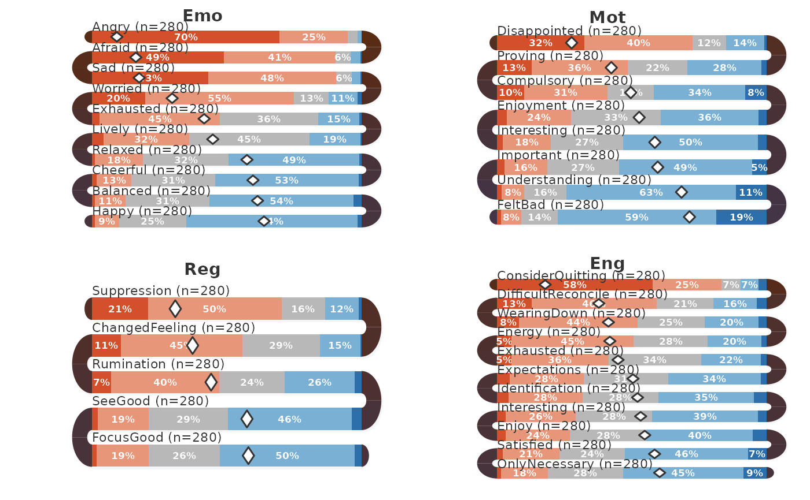

Person-level ratings of emotion, motivation, regulation and engagement
Source:R/data.R
student_survey.Rdstudent_survey is a dataset of the mean ratings of 34 items for the 280
university students of ema_emotions, from the same 14-day
experience-sampling study (Neubauer & Schmiedek, 2024). Each value is a
student's mean rating of one item over all prompts, rounded to a whole number
and rescaled from 1-7 to 1-5 by round(1 + (x - 1) * 4 / 6).
The items belong to four constructs, marked by a column-name prefix, so
that survey_snake(student_survey, facet = TRUE) draws one panel per
construct:
Emo_: 10 emotion items: Happy, Afraid, Sad, Balanced, Exhausted, Cheerful, Worried, Lively, Angry, Relaxed.Mot_: 8 study motivation items: Disappointed, FeltBad, Important, Interesting, Compulsory, Proving, Understanding, Enjoyment.Reg_: 5 emotion regulation items: SeeGood, FocusGood, Suppression, ChangedFeeling, Rumination.Eng_: 11 study engagement items: Enjoy, WearingDown, Satisfied, DifficultReconcile, Interesting, Exhausted, OnlyNecessary, Energy, Identification, Expectations, ConsiderQuitting.
Format
A data frame with 280 rows (students) and 34 integer columns with
values 1-5, named <prefix>_<item> as listed above.
Source
Neubauer, A. B., & Schmiedek, F. (2024). Approaching academic adjustment on multiple time scales. Zeitschrift fuer Erziehungswissenschaft, 27(1), 147–168. doi:10.1007/s11618-023-01182-8
Data: https://osf.io/bhq3p | Codebook: https://osf.io/csfwg | Code: https://osf.io/84kdr/files | License: CC-BY 4.0
See also
ema_emotions for the emotion items alone; ema_beeps for the
prompt-level data; survey_snake() and its facet argument.
Examples
survey_snake(student_survey, facet = TRUE, tick_shape = "bar",
sort_by = "mean", facet_ncol = 2L)
